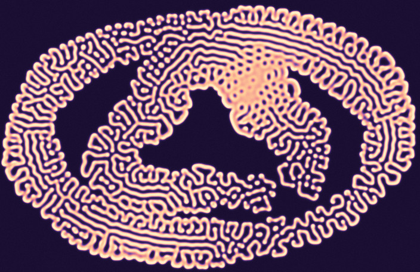

The experiment collection
An exhibition
you can play.
Bend light. Break a database. Grow a city. Get your hands on experiments in science, creative code, systems, algorithms, and play.
The catalogue
Pick a bench.

From the isilicon notebook
A field that
draws itself.
Start with two rings of pigment. Run 1,700 steps and they become a maze. This Gray–Scott simulation ran on an NVIDIA RTX PRO 6000 Blackwell in 0.508 seconds.
Read the CUDA render code ↗